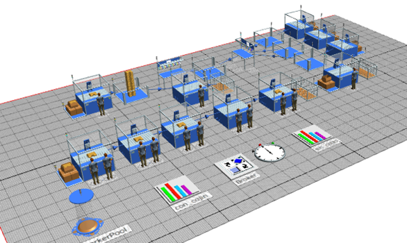
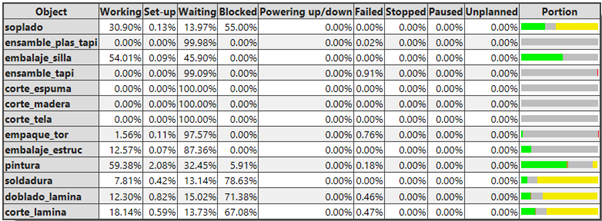
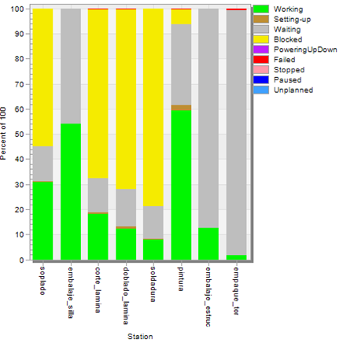

100TATE
100TATE1. SIMULACIÓN PROCESO SIN AUTOMATIZAR
Las simulaciones fueron hechas para un turno de producción de 8 horas, suponiendo que cada trabajador hace 4 paradas de 5 minutos para descanso y 1 parada de 30 min para almorzar, el transporte del producto de una estación a otra lo hace una persona caminando o con la ayuda de un montacarga. De igual manera, se supuso un inventario inicial de materia prima lo suficientemente amplio para que las estaciones no tuviesen tiempos de parada por falta de material. Por otro lado, se estableció que la empresa distribuye sus productos sin ensamblaje final, es decir, la silletería se entrega aparte de la estructura y de la tornillería.
1.1. SIMULACIÓN MODELO SILLA SENCILLA SIN AUTOMATIZAR
1.1.1. Diagrama
1.1.2. Proceso de fabricación
1.1.3. Análisis de resultados
Como se verá posteriormente, la simulación de este modelo de silla deshabilita una línea de producción, por esto algunas estaciones se verán vacías. Para esta referencia de silla solo son necesarias 2 líneas de producción que consisten en la línea para la estructura y otra referente a la silla plástica como tal. Como estación adicional, se puede encontrar una máquina para el empaque de tornillos.
  Una vez se ingresaron los datos obtenidos al analizar el funcionamiento de cada equipo, @tecnomatic generó el reporte que se muestra en las imágenes adjuntas, gracias a esto es posible ver el funcionamiento de la fábrica, en donde la línea de producción de la estructura al finalizar el turno generó 18 piezas, la línea de producción referente a la silla plástica produjo 68 piezas, con un total de 17 trabajadores en producción únicamente, algunos de ellos transportan el producto terminado de una estación a otra.
Como se puede observar, la estación con más tiempo de trabajo es la de pintura y la de menor tiempo es la de estación de empaque de tornillos, esto debido a la alta y baja demanda en las líneas de producción respectivas.
Hay mucho tiempo de bloqueo en las estaciones de corte, doblado y soldado de la estructura, esto debido a un tiempo de ciclo grande en la estación siguiente que es la de pintura.
Al fijarnos en la estación de embalaje, se puede ver un gran tiempo de trabajo esto se debe a que el proceso de apilado y paletizado se hace completamente manual y lo realiza una sola persona, ocasionando un tiempo de operación bastante alto y provocando una demora en la salida del producto al almacén final.
La estación de empaque de tornillos muestra un gran tiempo de espera, dado que el tiempo en el que acaba su producción diaria es muy corto, esto provoca un rendimiento súper bajo en esta estación.
Finalmente, al igual que el otro modelo se evidencian tiempos de averías bastante bajos, esto debido a que la herramienta utilizada por los operarios resulta muy sencilla y económica y por ende de fácil reemplazo.